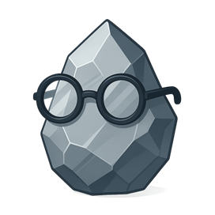

Использование ИИ в робототехнике
На данной странице вы можете найти информацию о том как добавить ИИ в том или ином виде в ваш проект.
ИИ — это когда мы взяли бездушный камень (кремний), прикрутили к нему куски меди, заставили складывать нули и единицы, а потом начали на полном серьёзе спрашивать у калькулятора совета по жизни.
Что даёт ИИ в проекте:
- уникальные свойства (зрение, слух и т.д.)
- плюс к престижу проекта
ИИ в проекте не является обязательным, оно:
- добавляет сложность
- делает проект дороже
- увеличивает время создания проекта
- требует хотя бы минимального знания python
- для тренеровки ИИ требуется мощное железо
Какие ИИ используют в проектах?
На практике в конкурсах встречаются: - 95% — компьютерное зрение (CV) - 4% — распознавание речи - 1% — узкоспециализированный ИИ (ANI)
Компьютерное зрение - это область ИИ, где машины извлекают полезную информацию из изображений и видео и используют её для действий.
Вход: кадры камер, фото, глубина, LiDAR.
Вычисления: фильтры, признаки, сверточные сети, трансформеры, геометрия.
Выход: что и где на сцене, как это движется, как с этим взаимодействовать.

Простейший вариант использования компьютерного зрения - YOLO.
Распознавание речи — автоматический процесс преобразования речевого сигнала в цифровую информацию (например, текстовые данные).
Узкоспециализированный ИИ — это система, обученная выполнять одну чётко ограниченную задачу в одном домене и не переносить навыки за его пределы.